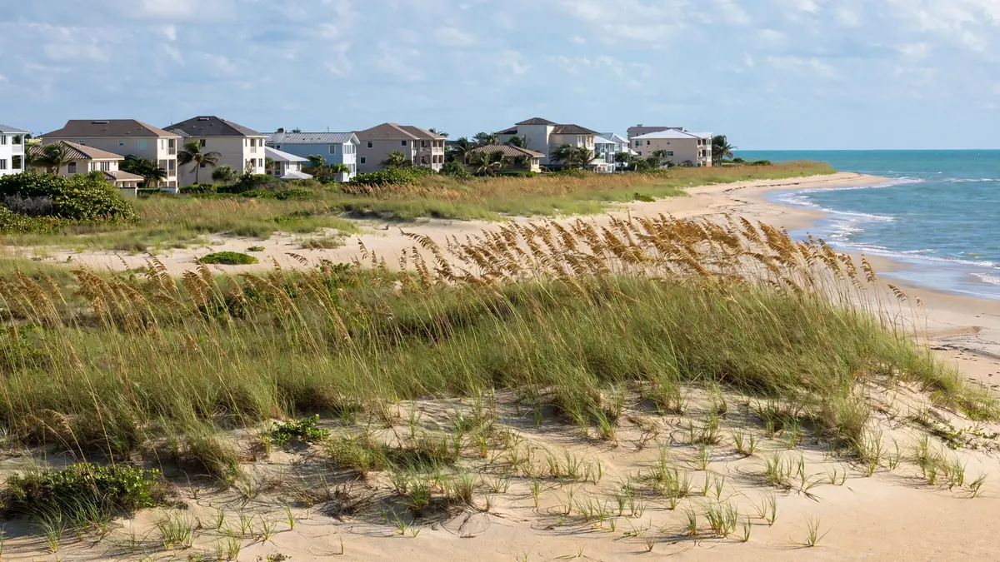

Emergency Water Cleanup in North Beach, Hollywood FL
ZIP Code: 33019

North Beach pairs beachfront living with quieter residential streets, and water problems here split the same way. Hollywood Water Damage Experts provides emergency water cleanup for North Beach and the 33019 area — serving beachfront condos, low-rise residences, and the homes set back from the sand. North Beach service means extraction, hidden-moisture mapping, monitored structural drying, and clear documentation after leaks, floods, burst pipes, or sewage backups.
Water Emergencies We See in North Beach
Along the northern shoreline, storm-driven rain and ocean spray test windows, sliders, and exterior walls every season. A few blocks inland, the risks look more familiar: aging supply lines, water heaters tucked into utility closets, and washing machine hoses that fail without warning. In both cases water travels — down through ceilings in multi-story buildings, or sideways under flooring in single-level homes.
Coastal humidity means wet materials stay wet longer here, and mold can gain a foothold within a day or two of a loss. A fast local response to North Beach matters because the first hours decide whether the job is a straightforward extraction or a multi-room drying project. We arrive with pumps, meters, and dehumidifiers, and we map moisture before placing a single piece of equipment.
What Local Water Cleanup Looks Like
After stopping the source and checking safety, we extract standing water and then hunt for hidden moisture. Meters and thermal imaging reveal dampness inside walls and under floors that looks dry on the surface. Drying equipment goes where the readings point, and we return to verify materials reach their dry standard before anything is closed back up. That sequence is water mitigation in North Beach in practice — and when repairs follow the drying, it becomes full water damage restoration in North Beach, handled by the same local network.
When contamination is involved — a sewage backup or floodwater that picked up debris — we shift to containment and sanitization protocols, and porous materials that absorbed it are removed rather than restored. Clean-water events get the same thorough drying discipline, because in this climate a surface that looks dry is never proof enough.
Services Available for North Beach (33019)
Property owners in North Beach can request the full range of our Hollywood services, including:
- Emergency water extraction
- Flood cleanup
- Sewage backup cleanup
- Burst pipe cleanup
- Roof leak cleanup
- Structural drying
- Mold remediation support after water events
- Appliance leak cleanup
For the complete list, visit all water cleanup services. Neighborhood coverage for the rest of the city is listed on our service areas page. The main overview of water damage restoration in Hollywood, FL is on the homepage.
Insurance Documentation and Clear Communication
Many sudden water losses are claimed under homeowners or commercial policies. We do not decide coverage. What we provide is a clear record of conditions and work: photos, moisture readings, and a straightforward description of what was done. That information helps you and your adjuster understand the scope. If you need help understanding the next administrative step, we can point you to practical next actions without overpromising on claim outcomes.
How to Get Help in North Beach
Call (754) 294-7959 for 24/7 emergency response in North Beach and ZIP 33019. Tell us what you see, whether water is still flowing, and any safety concerns such as electrical panels near wet areas. A crew is dispatched with the equipment needed for extraction and drying. For non-emergency questions, the same number reaches the team during normal business windows.
Practical guides — what to do after water damage, how water categories work, and mold timing in Florida — are available on our blog.
Frequently Asked Questions — North Beach
Who do I call for water removal in North Beach?
Call (754) 294-7959. Water removal in North Beach is handled around the clock — extraction first, then moisture mapping and drying, which matters in beach condos where wind-driven rain and AC condensate leaks hide inside walls.
How quickly should I call after finding water?
Immediately. In North Beach humidity, each hour of delay lets moisture spread further into building materials. Call (754) 294-7959 any time — early calls keep jobs smaller.
Can wind-driven rain really cause interior damage?
Yes. Sustained wind pushes rain through window frames, slider tracks, and small exterior gaps, soaking drywall and insulation from the inside. We trace these paths with moisture meters.
Do you work in low-rise condo buildings?
Yes. We coordinate with on-site management when needed, document common-area versus unit damage clearly, and dry affected assemblies completely.
Will my insurance cover this?
Many sudden losses are covered, but policies vary. We provide photos and moisture documentation for your adjuster; coverage decisions are theirs.